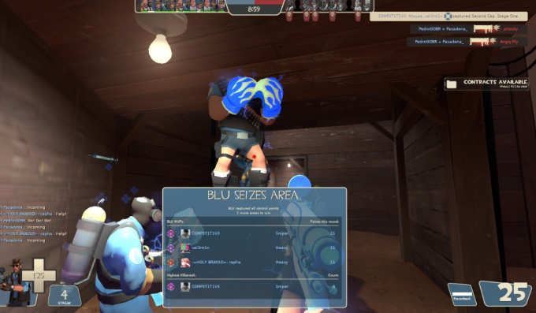
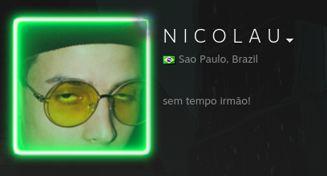
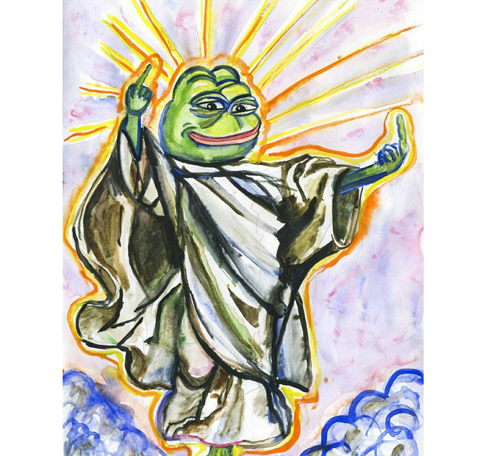
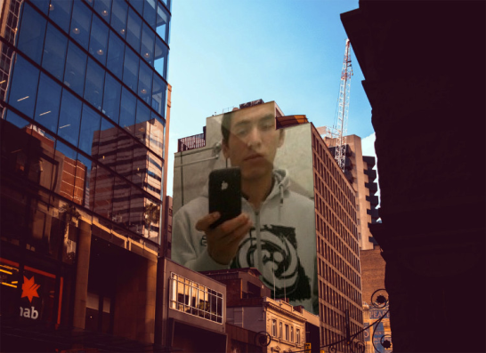

A fundação C.O.T.O.X. tem como objetivo o fomento de um casual justo para todos os jogadores. Nossa equipe altamente treinada está sempre disponível para atendê-lo nos mais variados serviços.

Aniquilamento de Closet

Closets são uma infeliz e lamentável praga nos servidores casuais de Team Fortress 2. Sempre escondendo seus cheats por trás de suas falsas habilidades, acusando outros de cheat e se achando um bom jogador, estes são ainda mais comuns do que muitos imaginam. Por um pix de R$ 7,99; iremos realizar uma caça e destruição do closet que você desejar.
Destruição de Pubeiro
Pubeiros são, infelizmente, muito negativos para o jogo na maioria das vezes. O problema não está em jogar no pub, mas em jogar no pub e ser conhecido por ser imbecil. Pubeiros sofrem de alta sensibilidade a cheaters, e na maioria das vezes possuem um nível de habilidade extremamente baixo. Costumam ficar no bottomscore e mandar "izi", mesmo que haja cheater no time dele, e a menor das coisas já é o suficiente para deixar um pubeiro completamente irritado. Por uma transferência bancária de R$ 20,00; faremos com que o pubeiro de sua escolha não tenha paz, e sofra um alto grau de irritação em suas tentativas de jogar no casual, sendo caçado e desintegrado.

Choramento de Boy

Choraboys estão presentes em qualquer jogo existente, mas nos jogos da valve, isso se torna pelo menos umas trinta vezes mais recorrente que o normal. Choraboys são pessoas com altos graus de estresse e problemas cardíacos ou hipertensão, que podem sofrer de acessos de raiva ou transtorno de borderline severo. A tendência é que choraboys sejam pessoas que dão a vida nesse jogo, e não aguentem uma mínima derrota ou um bot aparecer no time inimigo. Xingam com frequência, reclamam, e em casos extremos começam a mandar você se matar sem nenhum motivo aparente. Desde o fechamento do Tia Lani, a incidência de casos de choraboys tem aumentado constantemente, fazendo com que os especialistas estejam preocupados com a recorrência disso. Por um cheque de R$ 50,00; entregue pessoalmente para o Yuri Martins, nossa equipe irá acabar com a vida de seu alvo, para que ele aprenda a parar de chorar e voltar a entregar a pizza dele.
Alopramento de Cheater
Existe um jogo mais fácil de cheatar que Team Fortress 2? Se você respondeu não, está correto. Literalmente qualquer random que nunca nem encostou no jogo na vida pode baixar um cheat free e jogar numa conta alternativa, sem medo de tomar ban na sua conta principal (caso sequer tenha uma). Por mais que a maioria desses cheaters sejam horríveis e não tenham noção de jogo nenhuma (justamente por nunca ter jogado TF2 na vida), eles acabam ficando no 2fort por ser um mapa iniciante, assim como turbine. Porém, eventualmente, esses cheaters acabam indo para algum payload ou algo do tipo. Por [determinado valor random] iremos realizar o alopramento e chutamento do cheater ruim de volta para o ctf, onde ele pode jogar com pessoas do mesmo nível dele (ou até acima dele, visto que muitos F2Ps acabam sendo melhores que esses cheaters).